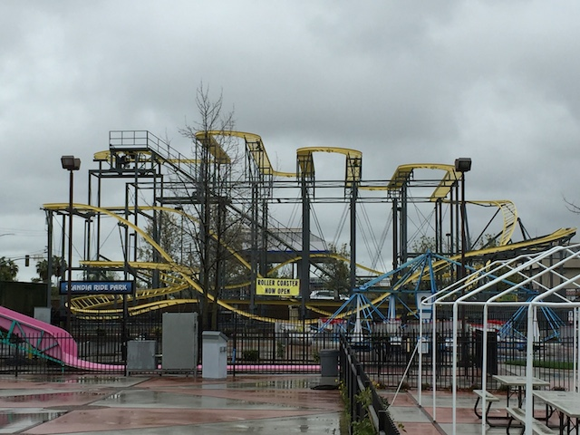

| |
Crazy Dane Coaster Review
For this review, we're here at Scandia Sacramento and we're reviewing their Wild Mouse, the Crazy Dane Coaster. Now this Wild Mouse is...a bit different. It's not like any of the other Wild Mice coasters that came before it. It's the only Wild Mouse that was designed by Miler, the people who design all those kiddy coasters. So yeah. Them designing a full blown coaster is...interseting. The ride originally opened up at the Casino Pier in New Jersey, but that park got destroyed by Hurricane Sandy in 2012 (thank you climate change), and this coaster got saved and sent to Sacramento. Now this actually angered some people as this ride had a REALLY bad reputation. No really. People HATED this Wild Mouse. So I was kind of nervous getting this credit. But hey. A credit is a credit. Hop in, buckle the seatbelt, and away we go. We head around the turn, climb the lifthill, getting a crappy view of the parking lot and a gas station, and we're at the top. We head around a sharp turn, and begin to head into the switchbacks. So we go through the standard Wild Mouse straight track, switchbacks that we normally do. We go through three of them. I know some complain that the turns on this are more brutal than your average mouse. #1. I LOVE brutal mice. Listen to me rave about all the crazy European Wild Mice. #2. This is NOT brutal. It's...average I guess. Go, Sharp Turn, Wee. Repeat X3. We then go through another sharp turn, except this actually leads us into a spiral drop. Now this thing was...interesting. I know it's by far, the part of the ride that stood out the most. I mean, most Wild Mouse coasters don't have a freaking spiral drop. And honestly, it's a little cool. Clunky, weird, but still kind of cool. We then rise up into a small little hill, which basically gets rid of all our speed. We go around another sharp turn, and down another small drop. I'm kind of enjoying this. Head up a small hill, that sort of has a curve at the top. Seriously, this thing is really poorly designed. It feels fine, but it just looks SO DAMN AWKWARD! Head around another turn, go down another small little dip, and down another sharp curved hill. OK, this part does slam you. But hey. It's not that bad. We go through a downward helix that feels...really intersting. Definetly awkward, but still fun. And then we hit the brakes. I know people kept complaining that this ride was brutal, beat the crap out of you, and was terrible. Oh come on. It's not that bad. It doesn't really hurt. OK, a couple moments, mainly that one turn up into the helix are kind of rough and jagged, and the whole thing definetly looks fairly awkward. But in all honesty, the ride...while quirky, is not that bad. Sure, it's not a good ride. Not by a long shot. But if you're worried that the ride was going to beat the crap out of you, don't worry. I guess that means I think the ride is underrated, except I'm not arguing that it's a really fun ride. I'm just arguing that it's not going to hurt you, which is quite a low bar.
5/10
Location: Scandia Sacramento
Opened at Casino Pier in 1999
Relocated to Scandia Sacramento in 2015
Built by: Miler Coasters
Last Ridden: June 11, 2016
Crazy Dane Coaster Photos


Home
|